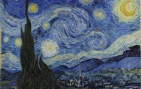
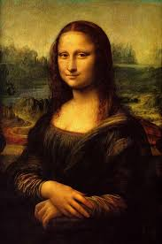
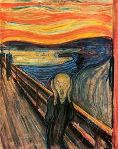

| Pintura | Artista | Data | |||
|---|---|---|---|---|---|
 A Noite EstreladaA Noite Estrelada de Vincent Van Gogh é exibida no Museu de Arte Moderna de Nova York. É uma das pinturas mais famosas do mundo Focidental. A pintura foi feita em 1889 e retrata a cidade de Saint-Remy sob o sol rodopiante. Está no MoMA em Nova York desde 1941. A pintura foi concluída após o famoso colapso mental de Van Gogh em 1888, no qual o artista havia removido sua própria orelha. |
Van Gogh | 1889 | |||
 MonalisaIndiscutivelmente a pintura mais famosa que já foi criada no mundo ocidental, a Mona Lisa foi pintada por Leonardo da Vinci entre 1503 e 1506. Ele terminou de trabalhar em 1519. A pintura é exibida no Museu do Louvre de Paris. Acredita-se que seja um retrato de Lisa Gherardini, uma nobre italiana. A pintura é famosa por sua sutileza, composição e expressão facial inexplicável do sujeito. |
Leonardo da Vinci | 1503-1506 | |||
 O GritoO Grito, uma das pinturas mais famosas do mundo de todos os tempos, foi pintado por Edvard Munch em 1893. A pintura mostra uma pessoa assustada gritando. A pintura está localizada na Galeria Nacional, Oslo, Noruega. Um fato interessante sobre essa pintura é o fato de que muitas vezes tem sido alvo de assaltos à arte. A última vez que a pintura foi roubada foi em 2004. Ela desapareceu por dois anos antes de finalmente ser recuperada em 2006. |
Edvard Munch | 1893 |